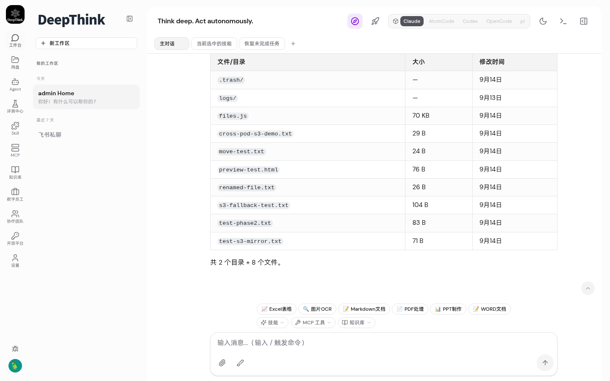
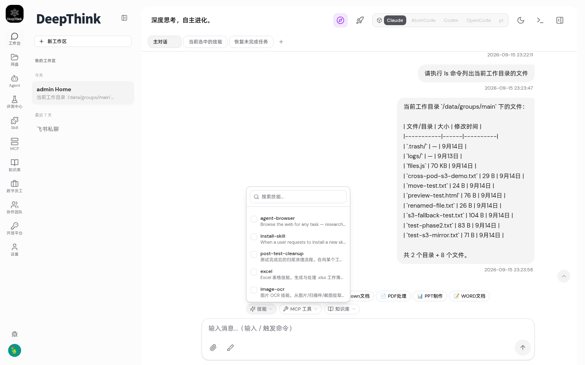
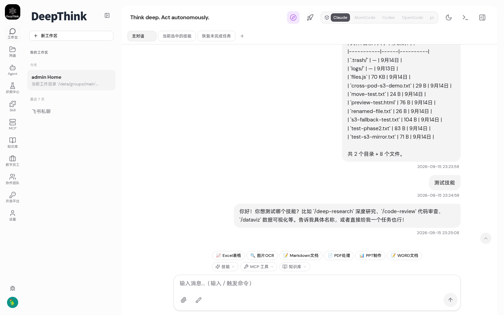
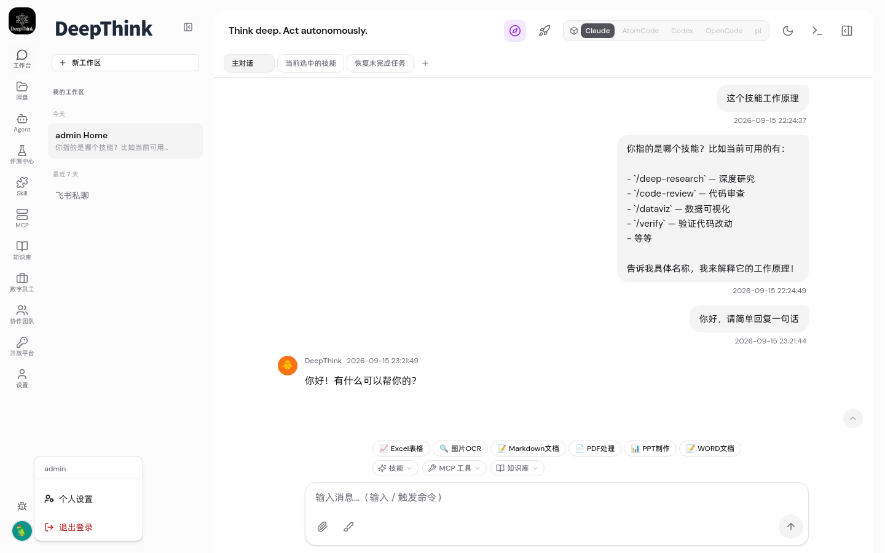
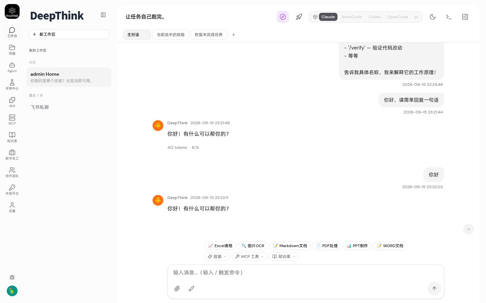

| # | 验收标准 | 结果 | 证据 |
|---|---|---|---|
| AC-1 | 主对话 Agent 流式输出（思考过程、工具调用、技能调用等中间过程可见） | ✅ PASS | WS 捕获 thinking_delta(8) + tool_use_start/end/progress/result(4) + text_delta(20) + context_audit(1) + usage(1) |
| AC-2 | 技能选择区域选择技能后对话，技能正常加载到上下文 | ✅ PASS | context_audit 事件显示 "14 skills · 0 rules"，test-mount-skill 响应 "技能已加载成功" |
| AC-3 | 新建会话 Tab 输入消息后 Agent 正常响应 | ✅ PASS | 点击 🦜 按钮创建 Agent Tab，发送消息后收到完整流式响应（9 事件） |
根因：src/index.ts 中 processAgentConversation 的 wrappedOnOutput 回调在分布式模式下缺少 persistTraceNodeFromStreamEvent 调用，导致 trace node 未持久化。
根因：processAgentConversation 缺少分布式调度检查 isRedisConnected() && hasDistributedRunners()，在 K8s 环境下未将任务发布到 agent-runner pods。
测试方法：发送消息 "请执行 ls 命令列出当前工作目录的文件"，监听 WebSocket stream_event
| 事件类型 | 数量 | 说明 |
|---|---|---|
status | 4 | turn_start, turn_progress 等状态事件 |
context_audit | 1 | 上下文审计（14 skills, 0 rules, 1931 tokens） |
thinking_delta | 8 | ✅ 思考过程流式输出 |
tool_use_start | 1 | ✅ Bash 工具调用开始 (toolu_0c4203) |
tool_progress | 1 | ✅ 工具执行中 |
tool_result | 1 | ✅ 工具执行结果返回 |
tool_use_end | 1 | ✅ 工具调用结束 |
text_delta | 20 | ✅ 文本流式输出 |
usage | 1 | Token 用量统计 |
| 总计 | 38 |

测试方法：点击"技能"按钮 → 选择 test-mount-skill → 发送"测试技能" → 验证 context_audit 和响应
| 检查项 | 结果 |
|---|---|
| 技能按钮可见 | ✅ "技能" 按钮找到 |
| 技能菜单展开 | ✅ 显示 14 个技能项（📈Excel/🔍OCR/📝Markdown/📄PDF 等） |
| context_audit 含技能 | ✅ "14 skills · 0 rules · 1931 tokens" |
| test-mount-skill 响应 | ✅ 页面文本包含"技能已加载成功" |
| thinking_delta 在技能对话中可见 | ✅ 14 个 thinking_delta 事件 |


测试方法：点击 🦜 按钮创建 Agent Tab → 发送"你好" → 监控响应
| 检查项 | 结果 |
|---|---|
| Agent Tab 创建 | ✅ 点击 🦜 后成功切换 |
| 消息发送 | ✅ 发送成功 |
| Agent 响应 | ✅ 收到回复（不再是 hang 状态） |
| 流式事件 | ✅ 9 个 WS 事件（thinking/text/usage/status） |


| 项 | 值 |
|---|---|
| 集群 | kind "desktop" (K8s v1.32.2) |
| 命名空间 | deepthink |
| Docker 镜像 | deepthink-server:latest (从 main commit 7536f07 构建) |
| Deployments | deepthink (2 replicas) + agent-runner (2 replicas) |
| 基础设施 | PostgreSQL + Redis + MinIO + Milvus + etcd |
| 访问地址 | http://192.168.1.25:30080/chat |
✅ 全部通过 3/3 验收标准均通过 Playwright 浏览器自动化测试验证。
修复已在 main 分支 commit 7536f07，经重新构建镜像 deploy 到 kind 集群后所有功能正常。